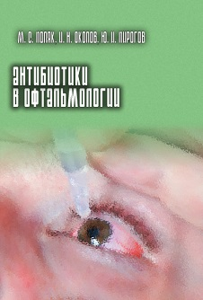

Антибиотики в офтальмологии
|  |
Поляк М.С., Околов И.Н., Пирогов Ю.И. Антибиотики в офтальмологии. — СПб.: Нестор-История, 2015. — 352 с.
ISBN 978-5-4469-0765-6
Рецензент: Бржеский Владимир Всеволодович — заведующий кафедрой офтальмологии с курсом клинической фармакологии ГБОУ ВПО «Санкт-Петербургский государственный педиатрический медицинский университет» МЗ РФ, доктор медицинских наук, профессор
В книге рассматриваются основные положения рациональной антибиотикотерапии в офтальмологии. Приводятся данные о микрофлоре глаза и ее чувствительности к антибиотикам. Особое внимание обращается на резистентность возбудителей заболеваний глаз к антибиотикам и пути ее преодоления. Дается характеристика антимикробных лекарственных средств, используемых в офтальмологии, в том числе новых препаратов, перспективных для лечения инфекционной патологии глаз. Обобщен опыт клинического применения антибиотиков с целью профилактики и лечения офтальмопатологии микробной природы.
Книга предназначена для офтальмологов, клинических микробиологов и фармакологов, других специалистов, интересующихся лечением инфекционных заболеваний глаз.
|
Приобрести книгу можно в книжных магазинах или обратившись непосредствено к автору по электронной почте: mspolyak@ya.ru. Некоторые фрагменты глав книги Вы можете скачать по ссылкам в оглавлении ниже.
| Глава 1. |
| Основные положения рациональной антибиотикотерапии [pdf] | 3 |
| Глава 2. |
| Микробиология глаза | 33 |
| Глава 3. |
| Возбудители инфекционных поражений глаз | 46 |
| Глава 4. |
| Резистентность микроорганизмов к антибиотикам. Ее клиническая значимость | 58 |
| Глава 5. |
| Проникновение антибиотиков в ткани глаза | 92 |
| Глава 6. |
| Повреждающее действие антибиотиков | 125 |
| Глава 7. |
| Современные и перспективные антибиотические препараты для офтальмологии | 142 |
| Глава 8. |
| Лекарственные формы антимикробных препаратов для офтальмологии | 228 |
| Глава 9. |
| Антибиотикотерапия инфекционных заболеваний глаз | 250 |
| Глава 10. |
| Антибиотикопрофилактика при глазных травмах и операциях | 304 |
| Глава 11. |
| Микробиологическое обоснование антибиотикотерапии: методология, критерии, клиническое значение | 331 |
|
{kind=link}